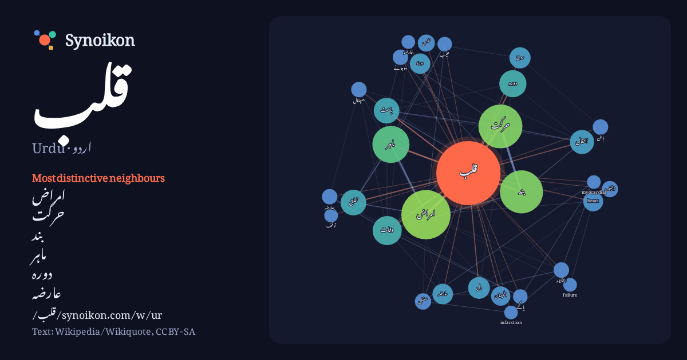

اردو · Urdu · popular word
قلب
“heart” · The words found around it in 684 instances from Urdu Wikipedia, Wikiquote.

Most distinctive neighbours
- امراض 76×
- حرکت 49×
- بند 34×
- ماہر 31×
- دورہ 21×
- عارضہ 17×
- دورۂ 17×
- heart 16×
- وفات 14×
- روح 14×
- اطمینان 14×
- باعث 14×
- انتقال 12×
- عضل 11×
- نفس 10×
- احتشاء 9.9×
- بعارضہ 9.9×
- باطن 9.5×
- دل 9.4×
- ہوجانے 9.3×
× = how many times more often than in general Urdu Wikipedia text.
Most frequent neighbours
- میں 219
- سے 147
- کا 113
- کو 99
- امراض 92
- حرکت 73
- بند 70
- ماہر 52
- ہونے 51
- اس 35
- جو 34
- جن 32
- وفات 32
- واقع 30
- نے 29
- ان 28
- دورہ 28
- وجہ 27
- یا 26
- باعث 25
In context
- دِل کہا جاتا ہے ایک عضلاتی عضو ہے جو تمام جسم میں خون مضخت (pump) کرتا ہے۔ قلب کی نظمی حرکت (دھڑکن) ایک غیر موقوف (نہ رکنے والی) حرکت ہے جو قبل ازپیدائش Wikipedia snippets · قلب
- دورہ قلب سے مراد دل کے عضلات کی احتشاء یعنی ان کو خون کی فراہمی میں رکاوٹ کی ہوتی ہے۔ انگریزی میں اسے Myocardial infarction کہتے ہیں جسے اکثر MI کے اختصار Wikipedia snippets · دورہ قلب
- دل / قلب کی دھڑکن کے رک جا نے کو توقفِ قلب یا ایقاف القلب (cardiac arrest) کہتے ہیں، جبکہ توقف (tawaqquf) کسی بھی شے کے موقوف ہوجانے یا رک جانے یا arrest Wikipedia snippets · بندش قلب
- سقوطِ قلب (انگریزی: heart failure) جسے امتلائی سقوطِ قلب (انگریزی: congestive heart failure) کے نام سے بھی جانا جاتا ہے، ایک روگ اور اجتماعِ علامات ہے Wikipedia snippets · سقوط قلب
- قومی ادارہ برائے امراض قلب ہسپتال کراچی کے سب سے بڑے ہسپتال جناح ہسپتال کے عین مقابل واقع ہے۔ حکومت پاکستان کے زیرنگرانی اس ہسپتال کا نام نیشنل انسٹی Wikipedia snippets · قومی ادارہ برائے امراض قلب
- قلب پہلی برمجہ زبان ہے جو عربی رسم الخط میں لکھی جاتی ہے، بلکہ یہ پہلی ہے جو غیر لاطینی رسم الخط میں لکھی جاتی ہے۔ زبان ابھی اپنے ابتدائی مراحل میں ہے۔ Wikipedia snippets · قلب (پروگرامنگ زبان)
- Cardiology) راولپنڈی ادارہ امراض قلب پاکستان کے صوبہ پنجاب کے راولپنڈی میں راول روڈ پر واقع ایک غیر منافع بخش سطح کا امراض قلب (کارڈیک) کا ہسپتال ہے۔ جسے 2012ء Wikipedia snippets · راولپنڈی ادارہ امراض قلب
- خلقی مرضِ قلب (انگریزی: Congenital heart defect) دل کے بنیادی ڈھانچے یا اس کی شرائین میں پیدائش کے وقت سے نقص ہے۔ اس کی نشانیاں اور علامات مخصوص طرز کے Wikipedia snippets · خلقی مرض قلب
More Urdu words
Precomputed on 2026-10-09 with default settings (±5 words, medium corpus). The interactive map can refresh it with live data.